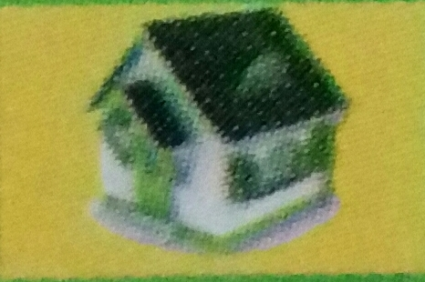
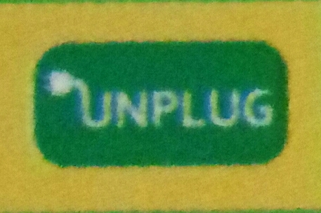

There is no resource more precious than water. There is also no resource that is misused, abused, misallocated, and misunderstood the way wates is! Safe drinking water, healthy and intact natural ecosystems, and a stable food supply are a few of the things at stake as our water supply is put under greater and greater stress.
Never put water down the drain when there may be another use for it such as watering a plant or garden, or cleaning.
Avoid flushing the toilet unnecessarily. Dispose off tissues, insects and other such waste in the trash rather than the toilet.
Don't let water run while shaving or washing your face. Brush your teeth first while waiting for water to get hot, then wash or shave after filling the basin.
Store drinking water in the refrigerator rather than letting the tap run every time you want a cool glass of water.
Consider installing an instant water heater on your kitchen sink so you don't have to let the water run while it heats up. This will reduce heating costs for your household.
Never install a water-to-air heat pump or air conditioning system. Air-to-air models are just as efficient and do not waste water.
Green energy refers to sources of energy that are non polluting and environment friendly, which can renew themselves naturally. Green energy is also known as sustainable energy, renewable energy or alternative energy. These are considered green because they reduce carbon emissions and pollution. Examples include biomass, geothermal power, wind power, hydroelectricity, and solar power. There are so many ways of optimizing your energy consumption.
Turn off unused or unneeded lights.
Use natural lighting instead of electric lighting whenever possible.
If you have a desk lamp, make sure it uses fluorescent bulbs (instead of incandescent bulbs).
Select cold water for washing clothes.
Turn off printers, especially laser printers, unless printing.
Keep windows and doors close in heated and air conditioned areas.
When purchasing computers and peripherals, buy low wattage equipment.
Solar energy is renewable. We never have to worry about running out of sunlight or using it all up. The sun is a consistent power source meaning it's always going to be there everyday.
Solar cells make no noise while collecting energy. There are no other renewable energy sources that are completely silent.
Set your thermostat a few degrees lower in the winter and a few degrees higher in the summer to save on heating and cooling costs.
Install compact fluorescent light bulbs (CFLs) when your older incandescent bulbs burn out. Unplug appliances when you're not using them. Or, use a 'smart' power strip that senses when appliances are off and cuts 'phantom' or 'vampire' energy use.
Wash clothes in cold water whenever possible. As much as 85 percent of the energy used to machine-wash clothes goes to heating the water.
Use a drying rack or clothes line to save the energy otherwise used during machine drying.
Keep your cell phones, computers, and other electronics as long as possible.
Donate or recycle electronics items responsibly when the time comes. E-waste contains mercury and other toxics and is a growing environmental problem.
A greener workspace can mean a lighter ecological footprint, a healthier and more productive place to work, whether you're the boss or the employee, whether your office is green already or still waiting to see the light, some practical steps can lay the groundwork for a healthy, low-impact workspace.
Digitize
Send emails instead of paper letters.
Review documents onscreen rather than printing them out.
Can also convert to PDF for paperless document sharing.
Keep files on computers instead of file cabinets.
Don't be a Paper Pusher
Look for recycled paper with a high percentage of post-consumer content and the minimum of chlorine bleaching.
Try to choose printers and photocopiers that do double sided printing.
Use Green Materials
Use biodegradable soaps and recycled paper or cloth towels in the bathroom and kitchen, and provide biodegradable cleaners for the custodial staff.
Redesign the Workspace
Start with good furniture, good lighting, and good air. Furniture can be manufactured from recycled materials as well as recyclable.
Workspace air quality is also crucial. Good ventilation and low-VOC paints and materials will keep employees healthy.
Lunch Time
Bring your lunch to work in a cloth bag. For food storage use glass containers that can be washed and re-used. If you do go out for lunch, try biking or walking instead of driving.
The eco-friendly kitchen begins with eating green, but it doesn't end there. Energy-efficient food preparation and cleaning habits, using equipment made from sustainable materials, and dodging toxic chemicals are also important if you want to have a truly healthy kitchen.
Make It Last
Choose cookware and utensils that stand the test of time and won't have to be thrown away with your leftover casserole. Buy high-quality knives that you can sharpen by hand, and use long-lasting cloth towels instead of paper.
Energy-Efficient Cooking
Preheating
is almost prehistoric. Making as best use of the oven as possible -- cooking more than one thing at once, for instance -- is also wise.
Do It Yourself
Avoid purchasing pre-prepared, frozen foods, and make them yourself, at home; if you have the space, take it a step further and grow your own fruits, vegetables, using your composted kitchen waste as fertilizer.
Buy Local
The food you bring in to your kitchen is just as important as the gadgets and appliances you have there, so buy local whenever you can. Whenever possible, purchase from local markets or directly from farmers themselves.
Bulk Up
Buy in bulk and cook in bulk; just make sure you can consume what you purchase and produce! Purchasing in bulk means less packaging, and fewer trips to the store, and can also mean financial savings.
Cars are one of the wonders of engineering and a threat to life on Earth. They create convenience and comfort and also snarled traffic and sprawling suburbs. About 20 percent of all green house gas emissions come from cars and light trucks contributing to climate change, air pollution, and disease. If you are truly trying to lighten your environmental footprint, the first thing to do is ask if you do in fact need a car. If the answer is yes, there are many things you can do to make your driving life greener.
Drive a Green Car
There are now hybrid cars to match almost any need two-door, four-door, SUV, luxury sedan. They get better mileage, than their conventional counterparts, have cleaner emissions, and save money on gas. Also affordable, practical electric cars and plug-in hybrids aren't too far off, either.
Use green driving best practices
Driving technique has a lot to do with your fuel economy.
Avoid sudden starts and stops and keep the speed between 40-60 km.
Stay in tune
Getting regular tune-ups, maintenance, and having clean air filters will ehlp you burn less gas, pollute less, and prevent car trouble down the line.
Leave the car at home
For shorter adventures, walk, take public transport, ride your bi-cycle.
Take it easy on the AC
Use the windows to help keep the car cool. Or try a electric or solar fan. Parking in the shade and using a reflective windshield shade can keep your car cooler when parked, meaning it takes less to cool it off when you get back in.
A man with a Plan
If you're not sure that you can do the public transportation things, start small with one goal of taking public transportation at least one day a week until you figure out the system. Before you know it, you'll be making friends and riding along with everyone else.
Try the bus or train for longer trips
Buses, trains, light rail and ferries generally have dedicated travel paths that are quicker than sitting alone in your car. These can cut down travel times.
Walk to School
Most children live close enough to walk to school, but few do. Instead of driving your children the few blocks, walk with them or allow them to take the school bus.
Tele Commute
Don't drive to the office, or fly to that conference, if you can arrange to complete your work/presentation electronically, or via video conferencing. Video conferencing can reduce 99 percent of the energy used for a trans-continental flight.
Plan your Trip
Obtain timetable and route-maps for your journey to know what to expect in advance. Many municipal public transport systems now have free online databases that will take your starting point and destination and calculate the fastest means and the best route for your trip.
Thinking green in your home is a great way to help the environment and save energy. The best way to go green with your bathroom is to modernize it and you will begin to see changes right away.
Install a dual-flush toilet. If replacing your toilet at this time is not an option, then consider installing a dual-flush retrofit to reduce water consumption.
Install a low-flow shower head and sink faucet that will help to cut back on the amount of water used.
Buy towels and linens that are made from organic cotton or either bamboo.
Don't use disposable towels to clean the bathroom. Micro fiber towels and washable cloths should be used instead.
Use non-toxic chemical free cleaners to clean and disinfect your bathroom.
Check for leaks often and fix any problems you encounter promptly. Water leaks can be a huge waste of energy and money.
Use energy-efficient light bulbs throughout the bathroom.
To many people, recycling conjures up the blue plastic bins and bottle drives. But recycling is a design principal, a law of nature, a source of creativity, and a source of prosperity.
First things first, a little R & R & R
The aphorism is so tried it almost might seem like "reduce, reuse, recycle" and it should go without saying. Through a balance of these three principals you can easily see your landfill-destined waste dwindle fast.
Know what you can and can't recycle
Read up on the recycling rules for your area and make sure you don't send anything in that can't be processed. Each city has its own specifics, so try to follow those guidelines as best as you can.
Buy recycled
Supporting recycling means feeding this loop by not only recycling, but also supporting recycled products. We can now find high recycled content in everything from printer paper to office chairs.
Recycle your water
If you're a home owner, consider rearranging your plumbing so that rainwater or wastewater from your shower and tub is used to flush your toilet.
If you don't love something, let it go
Lots of charities welcome your donations. Give away clothes that don't fit, the boxes you used in your last house move, or scented soaps that don't appeal to your sensibilities. Make it a rule in your house that nothing useable goes in the trash until you've given the community a fair shot at it.
Is anything more wonderful than finding the perfect gift for someone, or receiving the present that's just what you needed? How about gift-giving accompanied by the knowledge that your gift is also a gift for the planet? There's more to green giving than just switching to the stuff with the "green" label, however. Here are some pointers for finding the right gifts that make everyone happy.
Be sure your material gift will get used
Give material possessions only if you know the recipient well enough to pick out something they were on the cusp of getting for themselves, or which they really need and will certainly enjoy using.
Creative gifts show you care
The baby sweater you knit yourself is more likely to become a family heirloom, extending the life cycle of the materials in your gift.
Buy high quality goods
Sometimes a little extra care or money invested will result in finding a high quality gift that will do justice to the materials consumed in the manufacturing by giving a long life span. Your friend will enjoy your perfect high-quality gift much longer!
Think about your packaging
Use packaging that will not go to waste. Reusable wrapping, such as a gift bag, will pass on the fun. For family and close friends, consider the Sunday funnies instead of commercial gift wraps.
There is compelling evidence from all over the world that our planet's weather and climate patterns are changing. Droughts, receding glaciers and ice caps, extreme storms, rises in ocean temperatures and sea levels, shifts in distribution of organisms and diseases - scientists tracking these events overwhelmingly believe that global climate change is a fact. There are many simple things you can do in your daily life - what you eat, what you drive, how you build your home - that can have an effect on your immediate surroundings. Here is a list of few things that you can do to make a difference.
Change Your Air Filter - Check your car's air filter monthly.
Use Recycled Paper - Make sure your printer paper is 100% post consumer recycled paper.
Change the AC Filter - Clean or replace dirty air conditioner filters as recommended.
Plant a Tree - Trees suck up carbon dioxide and make clean air for us to breathe.
Here are 7 steps which we as individuals can take in our daily lives to reduce our Carbon footprint. These steps will not only help in mitigation but also in adapting to Climate Change.
Reuse and Recycle more.
Use recycling bins to dispose off glass, plastic, paper, cardboard, and other recyclable items.
Buy locally made and locally grown products.
Buy locally to reduce the energy required to transport your goods.
Use compact fluorescent or LED bulbs.
Replace three frequently used light bulbs with compact fluorescent bulbs and save 300lbs.

Insulate your home.
You should insulate anything that uses energy to stay at a different temperature from its environment.
Replace old appliances and reduce reliance on them.
Inefficient appliances (such as refrigerators, washing machines and air conditioners) waste energy.

Unplug unused electronics.
Even when electronic devices are turned off, they use energy.
Buy minimally packaged goods.
Less packaging could reduce your garbage significantly, saving 1,200 pounds of carbon dioxide and $70 per year.
Reality Check
Carbon dioxide concentration is 40% higher than in pre-industrial times.
Human activity caused most of warning between 1951 and 2010.
Earth's surface warmed 0.5°C over the period 1880 to 2012.
Heat waves and heavy rains have become more frequent since the 1950s.
Arctic sea ice has declined on average 3.8% per decade since 1979.
Global sea level is expected to rise between 26 and 82 cm by 2100.
Only an aggressive mitigation scenario can keep temperature rise below 2°C.
----------
----------
To realise the value of One Year, ask a student who failed a grade.
To realise the value of One Month, ask a mother who has given birth to a premature baby.
To realise the value of One Week, ask the editor of a weekly newspaper.
To realise the value of One Hour, ask the lovers who are waiting to meet.
To realise the value of One Minute, ask a person who just missed a train.
To realise the value of One Second, ask someone who just avoided an accident.
To realise the value of One Millisecond, ask the person who won a silver medal at the Olympics.
Treasure every moment that you have! And treasure it more because you shared it with someone special, spacial enough to spend your time with. And remember time waits for no one.
Yesterday is history. Tomorrow is a mystery. Today is a gift. That's why its called the present.


 Earth's surface
Earth's surface 
 Arctic sea
Arctic sea  Global
Global  Only an
Only an